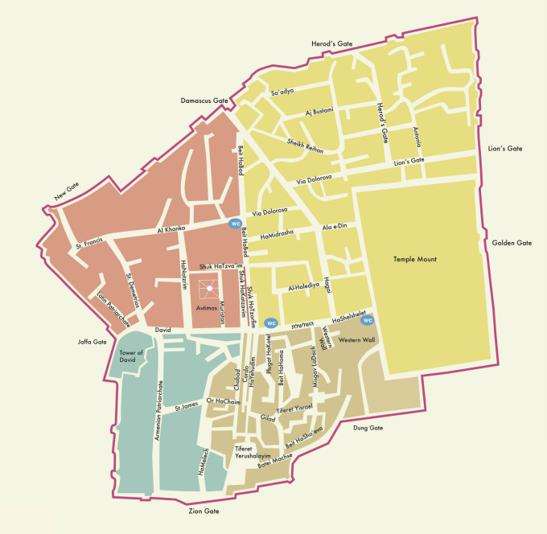
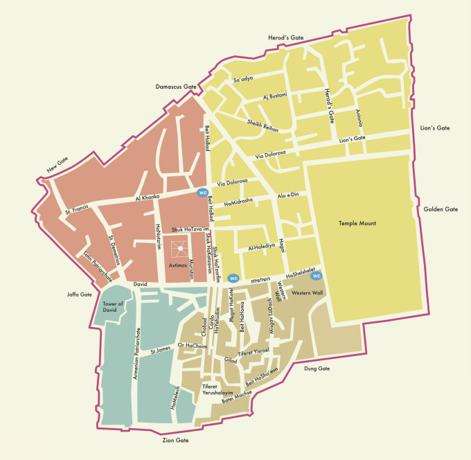

בס"ד
The Old City
The Old City of Jerusalem is full of the historic and religious elements that make this city so special.
The one-square-kilometer walled area is central to Judaism, Islam, and Christianity.
The Western Wall in the Jewish Quarter is the last remaining wall of the Jewish Temple compound.
Also, it is the holiest site in Judaism.
The Dome of the Rock makes this city the third holiest for Muslims.
There are four quarters in the Old City: Jewish, Muslim, Christian, and Armenian.
Each contrasts with each other, yet what remains bizarrely constant is the way in which the residents of this
surreal place rush about on their daily business.
A great overview of the Old City is on the Ramparts Walk.
Quarters
The Old City is divided into four quarters: the Muslim Quarter, the Christian Quarter, the Armenian Quarter and the
Jewish Quarter.
Despite the names, there was no governing principle of ethnic segregation: 30 percent of the houses in the Muslim
quarter were rented out to Jews, and 70 percent of the Armenian quarter.
Muslim Quarter
The Muslim Quarter is the largest and most populous of the four quarters and is situated in the northeastern corner
of the Old City, extending from the Lions' Gate in the east, along the northern wall of the Temple Mount in the
south, to the Western Wall – Damascus Gate route in the west.
During the British Mandate, Sir Ronald Storrs embarked on a project to rehabilitate the Cotton Market, which was
badly neglected under the Turks.
He describes it as a public latrine with piles of debris up to five feet high.
With the help of the Pro-Jerusalem Society, vaults, roofing and walls were restored, and looms were brought in to
provide employment.
Like the other three quarters of the Old City, until the riots of 1929 the Muslim quarter had a mixed population of
Muslims, Christians, and also Jews.
Today, there are "many Israeli settler homes" and "several yeshivas", including Yeshivat Ateret Yerushalayim, in the
Muslim Quarter.
Its population was 22,000 in 2005.
Christian Quarter
The Christian Quarter is situated in the northwestern corner of the Old City, extending from the New Gate in the
north, along the western wall of the Old City as far as the Jaffa Gate, along the Jaffa Gate – Western Wall route in
the south, bordering the Jewish and Armenian Quarters, as far as the Damascus Gate in the east, where it borders the
Muslim Quarter.
The quarter contains the Church of the Holy Sepulchre, viewed by many as Christianity's holiest place.
Armenian Quarter
The Armenian Quarter is the smallest of the four quarters of the Old City. Although the Armenians are Christian, the
Armenian Quarter is distinct from the Christian Quarter. Despite the small size and population of this quarter, the
Armenians and their Patriarchate remain staunchly independent and form a vigorous presence in the Old City.
After the 1948 Arab-Israeli War, the four quarters of the city came under Jordanian control. Jordanian law required
Armenians and other Christians to "give equal time to the Bible and Qur'an" in private Christian schools, and
restricted the expansion of church assets.
The 1967 war is remembered by residents of the quarter as a miracle, after two unexploded bombs were found inside
the Armenian monastery. Today, more than 3,000 Armenians live in Jerusalem, 500 of them in the Armenian Quarter.
Some are temporary residents studying at the seminary or working as church functionaries. The Patriarchate owns the
land in this quarter as well as valuable property in West Jerusalem and elsewhere. In 1975, a theological seminary
was established in the Armenian Quarter.
After the 1967 war, the Israeli government gave compensation for repairing any churches or holy sites damaged in the
fighting, regardless of who caused the damage.
The Jewish Quarter
The Jewish Quarter lies in the southeastern sector of the walled city, and stretches from the Zion Gate in the
south, bordering the Armenian Quarter on the west, along the Cardo to Chain Street in the north and extends east to
the Western Wall and the Temple Mount.
The quarter has a rich history, with several long periods of Jewish presence covering much of the time since the
eighth century.
In 1948, its population of about 2,000 Jews was besieged, and forced to leave en masse. The quarter was completely
sacked by Arab forces during the Battle for Jerusalem and ancient synagogues were destroyed.
The Jewish quarter remained under Jordanian control until its recapture by Israeli paratroopers in the Six-Day War
of 1967.
A few days later, Israeli authorities ordered the demolition of the adjacent Moroccan Quarter, forcibly relocating
all of its inhabitants, in order to facilitate public access to the Western Wall.
195 properties -synagogues, yeshivas, and apartments - were registered as Jewish and fell under the control of
Jordan's Custodian of Enemy Property.
Most were occupied by Palestinian refugees expelled by Israeli forces from West Jerusalem and its contiguous
villages until UNWRA and Jordan constructed the Shuafat Refugee Camp, where many were shifted, leaving most of the
properties empty of inhabitants.
In 1968, after the Six Day War, Israel confiscated 12%, including the Jewish quarter and contiguous areas, of the
Old City for public use. Some 80% of this confiscated infrastructure consisted of properties not owned by Jews.
After reconstruction the parts of the quarter destroyed prior to 1967, these properties were then offered for sale
exclusively to the Israeli and Jewish public.
The prior owners mostly refused because their properties were part of Islamic family waqfs, which cannot be put up
for sale.
As of 2005, the population stands at 2,348. (as of 2005). Many large educational institutions have taken up
residence.
Before being rebuilt, the quarter was carefully excavated under the supervision of Hebrew University archaeologist
Nahman Avigad.
The archaeological remains are on display in a series of museums and outdoor parks, which tourists can visit by
descending two or three stories beneath the level of the current city.
The former Chief Rabbi is Avigdor Nebenzahl, and the current Chief Rabbi is his son Chizkiyahu Nebenzahl, who is on
the faculty of Yeshivat Netiv Aryeh, a school situated directly across from the Western Wall.
The quarter includes the "Karaites' street", on which the old Anan ben David Kenesa is located.
Moroccan Quarter
There was previously a small Moroccan quarter in the Old City. Within a week of the Six-Day War's end, the Moroccan
quarter was largely destroyed in order to give visitors better access to the Western Wall by creating the Western
Wall plaza.
The parts of the Moroccan Quarter that were not destroyed are now part of the Jewish Quarter.
Simultaneously with the demolition, a new regulation was set into place by which the only access point for
non-Muslims to the Temple Mount is through the Gate of the Moors, which is reached via the so-called Mughrabi
Bridge.
More Info
Back to main site
 
